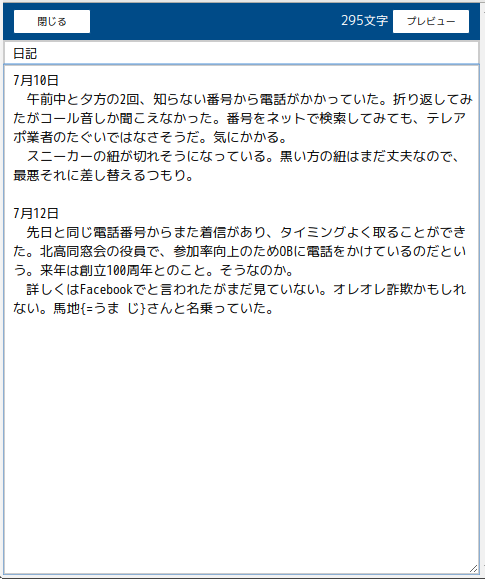
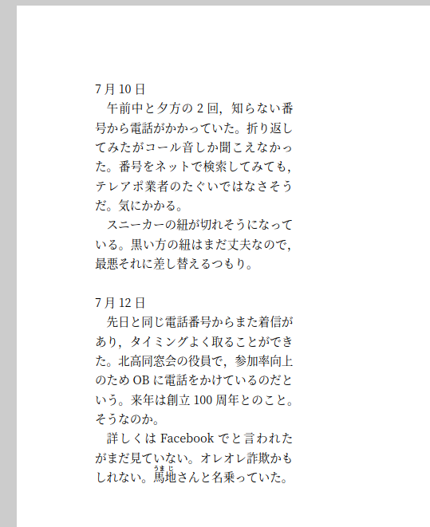
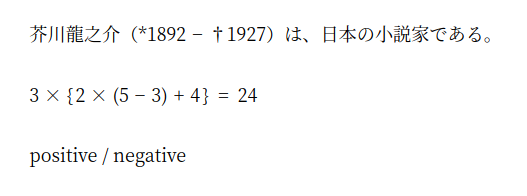
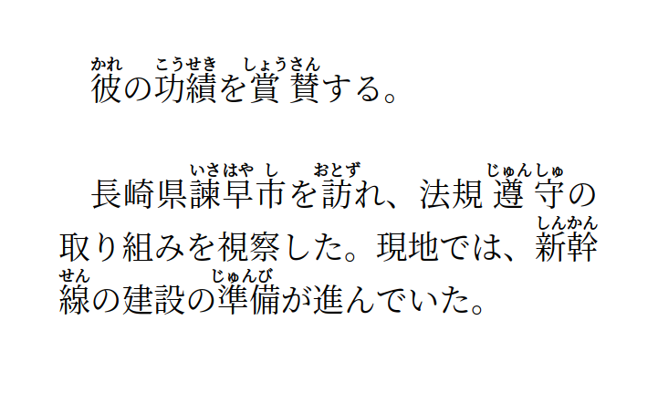
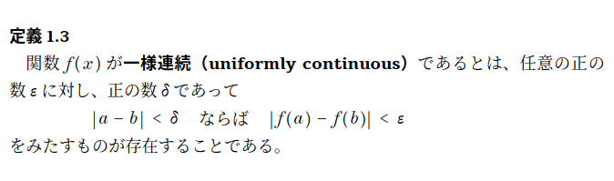

入力画面の入力欄に、タイトルとテキストを入力してください。

「プレビュー」を押すと組版結果が表示されます。

ごく基本的な文書であれば、ここまでの説明で終わりです。どうぞご活用ください。
「縦書き・横書き」「用紙サイズ」「段組み」などは、プレビュー画面の「ページ設定」で設定できます。
半角の「アスタリスク」「中カッコ」「スラッシュ」は特殊文字です。
これらの文字は、以下のように入力してください。
| テキスト | 組版結果 |
|---|---|
| 芥川龍之介（**1892 - †1927）は、日本の小説家である。 |  |
| 3 × {(}2 × (5 - 3) + 4{)} = 24 | |
| positive / negative |
アスタリスクは2個記載すると1個出力されます。中カッコは {(} が開き中カッコ、{)} が閉じ中カッコです。スラッシュは前後に空白を入れて下さい。
この説明書に記載されている仕様は追加・変更されることがあります。
仕様が大幅に変わる場合は、バージョンの切り替えなどにより後方互換性をとると思います。しかし確証はもてません。
改善は随時します。しかし、それにより例えば今まで1ページにおさまっていたものが微妙におさまらなくなる等、ケースによっては改善がかえって改悪となる場合もありえます。ご了承ください。
ヘルプ作成中です。
コマンドの文法や仕様について説明します。まだ組版見本が出そろっておらずすみません。順次、見本を追加していきます。
以下の例のように記載します。半角の中カッコ、半角のイコール、半角のスペースを使用してください。
| テキスト | 組版結果 |
|---|---|
| 彼{=かれ}の功績{=こう せき}を賞賛{=しょう さん}する。 長崎県諫早市{=いさ はや し}を訪{=おとず}れ、法規遵守{=じゅん しゅ}の取り組みを視察した。現地では、新幹線{=しん かん せん}の建設の準備{=じゅん び}が進んでいた。 |  |
上の例のように、隣接する文字との間隔は適当に調整されます。ルビがかかっている単語の途中でも改行されることがあります。
テキストを改行すると、組版結果でも改行になります。テキストの空行は、組版結果でも空行になります。
改ページは {:page} です。
改段は {:column} です。なお、1段組の場合や、複数段組でもページ内の最終の段にいる場合は、{:page} と同じ効果になります。
| テキスト | 組版結果 | 説明 |
|---|---|---|
| 改行 | 改行 | |
| {:column} | 改段 | 1段組の場合は{:page}と同じ |
| {:page} | 改ページ |
* で囲んだ部分は太字（和文はゴシック、欧文はボールド）になります。
/ を前置した文字はイタリックになります（英数字とギリシャ文字のみ有効）。
| テキスト |
|---|
| *定義 1.3* 関数 /f(/x) が *一様連続（uniformly continuous）*であるとは、任意の正の数 /ε に対し、正の数 /δ であって |/a - /b| < /δ ならば |/f(/a) - /f(/b)| < /ε をみたすものが存在することである。 |
|  |
| テキスト | 説明 |
|---|---|
| 日本語{=に ほん ご} | ルビです。 |
| {[飛鳥]あすか} | 熟語ルビです。熟語ルビの途中では改行されません。 |
デフォルトの字下げ量はページ設定で設定します。それを一時的に変更したい場合のコマンドです。
| テキスト | 説明 |
|---|---|
| {>3} | 現在位置を3字下げにします。主に段落の頭で使いますが、段落の途中でも使えます。「3」は例であり、数または変数が使えます。 |
| {>=A} | 現在の位置を変数Aとして記憶します。「A」は例です。変数名は数字以外の文字を含まなければなりません。 |
| {>A} | 変数Aに記憶された位置まで字下げします。「A」は例です。 |
| {>3:2} | 現在位置を3字下げにして、左端は2字下げにします。「3」「2」は例であり、数または変数が使えます。 |
| {>3:2:1} | 現在位置を3字下げにして、左端は2字下げ、右端は1字下げにします。「3」「2」「1」は例であり、数または変数が使えます。 |
| {<} | 段落の頭で使います。{>0}と同じ意味になります。 |
| {:center} | センター揃えです。主に段落の頭で使いますが、段落の途中でも使えます。 |
| {:right} | 右揃えです。主に段落の頭で使いますが、段落の途中でも使えます。 |
| テキスト | 説明 |
|---|---|
| {:ruled:1} | 段落囲みを開始します。「1」は例で、線種を指定します。線種は1〜4があります。 |
| {:ruled:0} | 段落囲みを終了します。{:ruled:0}を記載する行には{:ruled:0}だけを記載して下さい。 |
| {:ruled} | {:ruled:1}の略記です。 |
| {:u:1:4} | 下線類を開始します。「1」は例で、線種を指定します。線種は1〜5があります。「4」は例で、下線の位置を指定します。1〜6があります。 |
| {:u:0} | 下線類を終了します。 |
仕様は変わるかもしれませんが現時点です。
| テキスト | 説明 |
|---|---|
| $page | 現在のページ番号に置き換えられます。 |
仕様は変わるかもしれませんが現時点です。
| テキスト | 説明 |
|---|---|
| {*a b} | 「a b」は例です。この部分を1つの文字（単語）として扱います。 |
{!}で区切ります。この文法は変わるかもしれませんが現時点ではこれです。
| テキスト | 説明 |
|---|---|
| {!f}100{!}200{!} | 分数です。 |
| {!rt}3{!} | 根号です。 |
| {!(}/a + /b{!} | カッコです。中身の縦幅が大きいときは広がります。 |
| {!(+}/a + /b{!} | 中カッコです。中身の縦幅が大きいときは広がります。 |
| /a{!index}/n{!} | 下付きです。 |
| /a_/n | 下付きの略記です。 |
| /a{!index:sup}/n{!} | 上付きです。 |
| /a^/n | 上付きの略記です。 |
オートセーブであり、1文字入力するごとにセーブしています。なお、Undo履歴はセーブしていません（Ctrl + Z でUndoできますが、これはブラウザの機能です）。
セーブ先はブラウザのストレージ（localStorage）です。あまり大きくないので5MB程度でいっぱいになります。保存するのは文字データのみなので、人間が執筆した文章を保存するのであれば普通は問題になりませんが、自動生成したテキストなどを保存するといっぱいになることがあるかもしれません。
ブラウザの管理画面からデータを消した場合には、保存されているテキストは消えてしまいます。また、ないと思いたいですが、プログラムのバグなどにより、データが消えてしまうこともあるかもしれません。大切なテキストはご自身の責任により、時々「エクスポート」で書き出しすることをおすすめします。（エクスポートされるのはtext形式なので、最悪「メモ帳」などで内容を見ることができます。）
{kind=link}
{kind=link}
{kind=link}